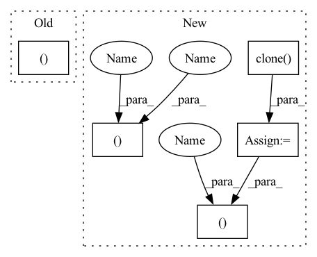

Pattern ID :2365

Before Change
raise RuntimeError("Unknown value for attention norm type")
context = torch.bmm(alignment.unsqueeze(1), inputs)
context = context.squeeze(1)
return context, alignment
class Postnet(nn.Module):
def __init__(self, mel_dim, num_convs=5):
After Change
raise RuntimeError("Unknown value for attention norm type")
if self.forward_attn:
// forward attention
prev_alpha = F.pad(self.alpha[:, :-1].clone(), (1, 0, 0, 0)).to(inputs.device)
self.alpha = (((1-self.u) * self.alpha.clone().to(inputs.device) + self.u * prev_alpha) + 1e-7) * alignment
alpha_norm = self.alpha / self.alpha.sum(dim=1).unsqueeze(1)
// compute context
context = torch.bmm(alpha_norm.unsqueeze(1), inputs)
context = context.squeeze(1)
return context, alpha_norm, alignment
else:
context = torch.bmm(alignment.unsqueeze(1), inputs)
context = context.squeeze(1)
return context, alignment, alignment
class Postnet(nn.Module):
def __init__(self, mel_dim, num_convs=5):
In pattern: SUPERPATTERN
Frequency: 3
Non-data size: 5
Instances
Fragment ID: 8036242
Project Name: coqui-ai/tts
Commit Name: 961af0f5cdefbb5f267671f6847cf05659962d6c
Time: 2019-04-05
Author: egolge@mozilla.com
File Name: layers/tacotron2.py
M Class Name: Attention
N Class Name: Attention
M Method Name: forward(6)
N Method Name: forward(6)
M Parent Class: nn.Module
N Parent Class: nn.Module
M File Name: layers/tacotron2.py
N File Name: layers/tacotron2.py
M Start Line: 173
M End Line: 175
N Start Line: 193
N End Line: 208
'>
Before Change
p[..., 0:2] = torch.sigmoid(p[..., 0:2]) + self.grid_xy // xy
p[..., 2:4] = torch.exp(p[..., 2:4]) * self.anchor_wh // wh yolo method
// p[..., 2:4] = ((torch.sigmoid(p[..., 2:4]) * 2) ** 2) * self.anchor_wh // wh power method
p[..., 4] = torch.sigmoid(p[..., 4]) // p_conf
p[..., 5:] = torch.sigmoid(p[..., 5:]) // p_class
// p[..., 5:] = F.softmax(p[..., 5:], dim=4) // p_class
p[..., :4] *= self.stride
After Change
return torch.cat((xy / nG, wh, p_conf, p_cls), 2).squeeze().t()
else: // inference
io = p.clone() // inference output
io[..., 0:2] = torch.sigmoid(io[..., 0:2]) + self.grid_xy // xy
io[..., 2:4] = torch.exp(io[..., 2:4]) * self.anchor_wh // wh yolo method
// io[..., 2:4] = ((torch.sigmoid(io[..., 2:4]) * 2) ** 2) * self.anchor_wh // wh power method
io[..., 4:] = torch.sigmoid(io[..., 4:]) // p_conf, p_cls
// io[..., 5:] = F.softmax(io[..., 5:], dim=4) // p_cls
io[..., :4] *= self.stride
// reshape from [1, 3, 13, 13, 85] to [1, 507, 85]
return io.view(bs, -1, 5 + self.nC), p
class Darknet(nn.Module):
YOLOv3 object detection model
'>
Fragment ID: 8036232
Project Name: nightsnack/yolobile
Commit Name: cb352be02c7d8653bed408f5cc2cdea58145e678
Time: 2019-04-05
Author: glenn.jocher@ultralytics.com
File Name: models.py
M Class Name: YOLOLayer
N Class Name: YOLOLayer
M Method Name: forward(4)
N Method Name: forward(4)
M Parent Class: nn.Module
N Parent Class: nn.Module
M File Name: models.py
N File Name: models.py
M Start Line: 130
M End Line: 168
N Start Line: 130
N End Line: 168
'>
Before Change
raise RuntimeError("Unknown value for attention norm type")
context = torch.bmm(alignment.unsqueeze(1), inputs)
context = context.squeeze(1)
return context, alignment
class Postnet(nn.Module):
def __init__(self, mel_dim, num_convs=5):
After Change
raise RuntimeError("Unknown value for attention norm type")
if self.forward_attn:
// forward attention
prev_alpha = F.pad(self.alpha[:, :-1].clone(), (1, 0, 0, 0)).to(inputs.device)
self.alpha = (((1-self.u) * self.alpha.clone().to(inputs.device) + self.u * prev_alpha) + 1e-7) * alignment
alpha_norm = self.alpha / self.alpha.sum(dim=1).unsqueeze(1)
// compute context
context = torch.bmm(alpha_norm.unsqueeze(1), inputs)
context = context.squeeze(1)
return context, alpha_norm, alignment
else:
context = torch.bmm(alignment.unsqueeze(1), inputs)
context = context.squeeze(1)
return context, alignment, alignment
class Postnet(nn.Module):
def __init__(self, mel_dim, num_convs=5):
'>
Fragment ID: 8036240
Project Name: coqui-ai/tts
Commit Name: 961af0f5cdefbb5f267671f6847cf05659962d6c
Time: 2019-04-05
Author: egolge@mozilla.com
File Name: layers/tacotron2.py
M Class Name: Attention
N Class Name: Attention
M Method Name: forward(6)
N Method Name: forward(6)
M Parent Class: nn.Module
N Parent Class: nn.Module
M File Name: layers/tacotron2.py
N File Name: layers/tacotron2.py
M Start Line: 173
M End Line: 175
N Start Line: 193
N End Line: 208